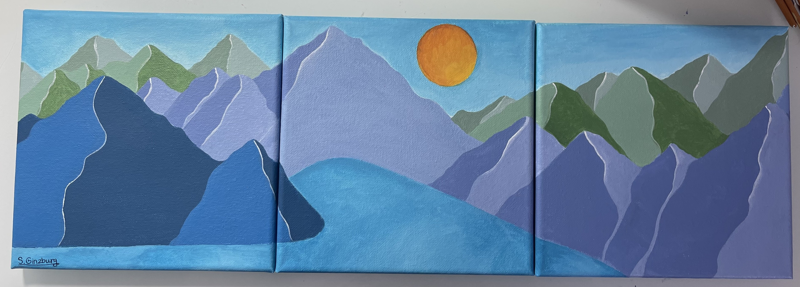

Traveling the World
I love exploring new cities, nature and cultures. Here are a few moments from Munich, Vienna and Georgia.
Management Information Systems Student @BGU | IT Specialist @Nuvei
I am an MIS student at Ben-Gurion University with over 5 years of hands-on experience in IT operations, cloud infrastructure, and technical support. My background includes roles in global organizations such as Unilever and Elbit Systems, alongside my service in IDF Intelligence Unit 9900. Today, I work as an IT Specialist at Nuvei.
I love exploring new cities, nature and cultures. Here are a few moments from Munich, Vienna and Georgia.
The kitchen is my happy place. I make everything from traditional stuffed onions to fresh braided challah, and even sushi at home.
I mostly paint landscapes in acrylic. This mountain triptych is one of my favorites.

Azure, Active Directory, Zscaler
ServiceNow, CyberArk, SCCM, VMware, MDM
Java, Python
SQL, Power BI, SPSS, R
Microsoft Excel, PowerPoint, Word